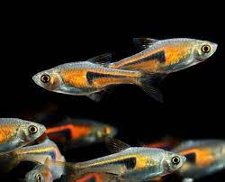
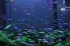
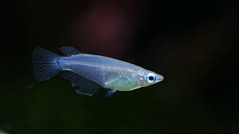
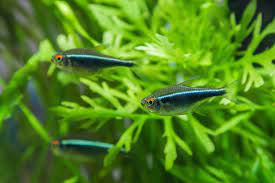

[金三角燈]
淡水魚類，原產地水質為pH值6.0~6.5的弱酸性水，硬度小於12的軟水，水溫23~28℃（資料來自世界魚類資料庫）。 實際飼養可適當調整。金三角燈魚所適宜的水溫大約在22~26℃，酸鹼度約為PH5.0~7.5之間，水質的硬度約在2~10°N。 金三角燈魚喜愛在水域的中層活動，屬於卵生魚類。日常飼養可以投餵一些薄片飼料以及較為小型的活性餌料。

[紅蓮燈]
性情溫和，易飼料，喜在水族箱的中下層成群不停地遊動，可與其他品種魚混養。飼養水溫22~24攝氏度，水質微酸性軟水， 水色要求清澈透明。餌料以小型活食為主。其喜在光線暗淡的水族箱中生活，禁止在強光下照射。

[女王燈]
女王燈習性喜愛待在魚缸中上層，清除水面油墨更是牠的拿手絕活，飼養女王燈為草缸最天然的清除油墨方法，比較需要注意的是如果缸內有攻擊性較強的魚種，女王燈容易受到驚嚇而跳缸。
